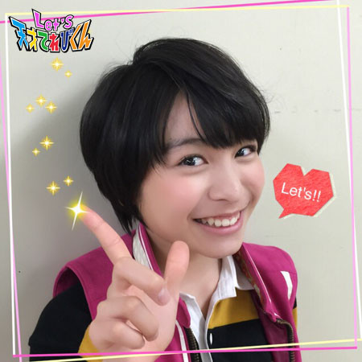
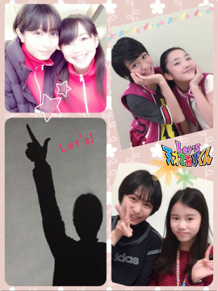
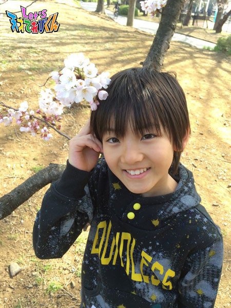
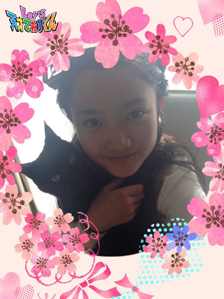
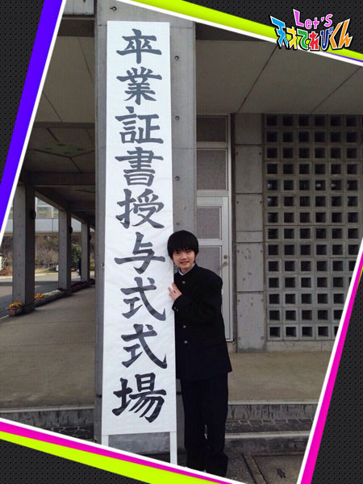
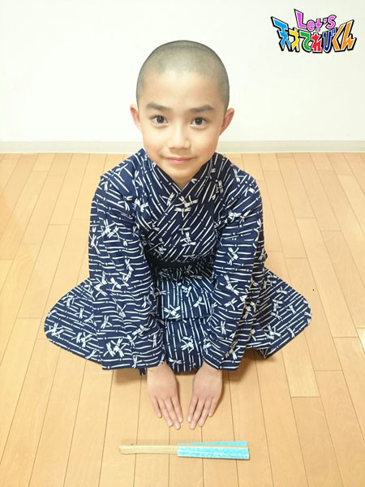

<<2015年3月 | トップページ | 2015年5月>>
2015年4月
会ってみたい！［原田明莉］
★Hello★
明莉です！
私の弟が1年生になりましたー！
その弟がランドセルを背負って、明莉とお兄ちゃんと写真を撮りました！
それで兄妹で制服を着ました！
なんか、おもしろかった。笑笑
で、で、で、
それと一緒に明莉も写真を撮ったんですよ！

あ、これは制服のブラウスだけ着たやつ！
これこれ！
髪型とか、すごくかわいくしてもらいましたよ！
明莉かよ！！！
って、ツッコミたくなります！！笑
ではでは、本題に入ります！
今回のテーマは、「 会ってみたい！」 です！
私は、昔の自分に会いたいです！！！
昔を振り返ることで初心に戻れそうだし、
自分の成長って覚えてないじゃないですか！
どうやって成長したのかも見れるからです！
でも、見たいのは過去の自分だけですよ！
未来の自分は、見たくないんです！
未来は見るんじゃなくて、見えてくるものだからさー！
それと、ご先祖さまにも会ってみたいです！
おじいちゃんの笑いかた
すんッッッごいおもしろいんですよ！
そのおじいちゃんのお母さんは、まだ元気なんだけど
お父さんは会ったことなくて…
どんな性格してるかとか、その笑いかたとかを見てみたいです！
私は、【 過去の自分 】 と 【 ひぃおじいちゃん 】に会いたいです！
本当に会いたいなー！
投稿者:原田明莉 | 投稿時間:18時54分 | カテゴリ：てれび戦士 | 固定リンク
会ってみたい！［小西憧弥］
こんにちは！憧弥です(^-^)/
新学期がはじまりました。
ついに6年生ーーー！！
新1年生は、小さくてかわいい（≧∇≦）
憧弥の1年生は、こんな感じ！
入学式の日で、緊張してる変な顔と、式が終わって写真を撮られるのにあきた顔 (ｰ ｰ;)
それじゃ、本題の 「 会ってみたい人！ 」 です！
ぼくは、未来の自分…
できたら、17年後の自分に会ってみたいです！
なんとなく、28歳の自分を見てみたい。
会えたら17年前の自分だと教えずに、まずは背が伸びてるか確認する。
伸びてなかったら…、帰って落ち込む。
そして、今以上に牛乳を飲む！
伸びてたら、17年前の自分だと告白して、いろんな話をしてアドバイスをもらう。
ちゃんと勉強したほうがいいよ！とか、
ご飯をいっぱい食べよう！とか言われそう（笑）
未来の自分からのアドバイスって、ちゃんと聞いてがんばれそう (^-^)/

投稿者:小西憧弥 | 投稿時間:18時45分 | カテゴリ：てれび戦士 | 固定リンク
会ってみたい！［飯島緋梨］
こんにちは^o^
飯島緋梨です。
春ですね～！
あたたかくなってきましたね。
春は、おいしい食べものがいっぱい(^_^)
緋梨は、タケノコが大好きです。
さて、今回のお題は、【 会ってみたい人！ 】
私が会ってみたい人は、憧れの人です！
1人目は、「 福田彩乃さん 」 です。
私は、ものまねが大好きです。
ものまねが、すごいじょうずな
福田彩乃さんに会ってみたいです(^_^)
もしも、福田彩乃さんに会えたら、
私のものまねを見てもらって、
福田彩乃さんにものまねのコツなどを教えてもらいたいです(o^^o)
福田彩乃さんに会えたときのためにも、
たくさんのものまねが出来るように練習しておきたいです。
そして、もう1人は、【 ローラさん 】 です（≧∇≦）
私のものまねレパートリーの中に
ローラさんがいます。
ローラさんは、かわいくて、おもしろくて憧れます。
もしも、ローラさんに会えたら、
お話をして、新ネタでローラさんのものまねにみがきをかけたいです(^_^)
みなさんの会ってみたい人は、誰ですか？
投稿者:飯島緋梨 | 投稿時間:18時45分 | カテゴリ：てれび戦士 | 固定リンク
会ってみたい！［小澤竜心］
こんにちは！竜心です。
ぼくは、今、歌舞伎 『 勧進帳（かんじんちょう） 』 に
出演させていただいています。
場所は、十八代目中村勘三郎さんが、
江戸の芝居小屋を現代に再現した劇場です。
ぼくは、歌舞伎映画で勘三郎さんの作品を観ました。
びっくりしたのは、
『 野田版 研辰の討たれ（とぎたつのうたれ） 』 や 『 大江戸りびんぐでっど 』 です。
すっごくおもしろくて、
ダンスを取り入れた歌舞伎もあるんだー(*´∇｀*)
と感動しました。
ほかにも
『 法界坊（ほうかいぼう） 』
『 らくだ 』
『 野田版 ねずみ小僧 』
『 人情噺 文七元結（にんじょうばなし ぶんしちもっとい） 』 などなど。
勘三郎さんの作品を観て、
ますます、歌舞伎っておもしろいんだなぁ～！
と思いました。
もし、今、勘三郎さんにお会いできたら、
聞いてみたいことがあります。
「 どうしたら、お客さまを笑わせたり、
楽しませたりできるんですか？ 」
きっと……
緊張してお話なんてできないと思いますが…f(^_^;)
ぼくも、お客さまに楽しんでもらったり、
感動してもらえるような人になりたいです。
歌舞伎に出させていただいたことや、
まわりのみなさんに感謝して、
これからも、ぼくは一生懸命がんばりますo(^o^)o
投稿者:小澤竜心 | 投稿時間:18時45分 | カテゴリ：てれび戦士 | 固定リンク
会ってみたい！［赤崎月香］
こんにちは ヽ(^▽^@)ノ
赤崎月香です。
中学2年生になりました☆彡
まさかの出席番号2番です！！！！！！
赤崎（あかさき）なので、
今まで2番になったことがなくて・・・
ちょっと、うれしい♪(*^-^)
楽しいクラスで良かった～♪ Ｏ(≧▽≦)Ｏ

☆。・:*:・°★,。・:*:・°☆
『 会ってみたい！ 』
ずっと会いたくて、でも会えない人がいます。
それは、おじいちゃんです。
おじいちゃんは、私が小学校4年生ときに亡くなりました。
亡くなる数時間前に話しをしました。
最後に言ってくれた言葉は、
「 勉強がんばれよ 」 でした・・・
勉強がんばっているよ！！！！(o^∇^o)ノ
少しずつ成績も上がり、
中学1年生の最後のテストは、学年で6番でした。
大きな手で、髪の毛がぐしゃぐしゃになるぐらい、
頭をなでてくれたと思います。
大きな声で、ビールを飲みながら
ほめてくれたと思います。
もし会えたら、話したいことが山ほどあります。
天国で会えたら、いいな～
☆。・:*:・°★,。・:*:・°☆
もうひとつ！！！
大人になった、てれび戦士のみんなに会いたい♪
みんな、どんな大人になっているのかなぁ？
たぶん…

あんまり変わってないと思うヾ(≧▽≦)ノギャハハ☆
またね～ヾ(*'-'*)
投稿者:赤崎月香 | 投稿時間:18時45分 | カテゴリ：てれび戦士 | 固定リンク
会ってみたい！［瀧澤翼］
こんにちは！
瀧澤翼です！
さぁ、今回のテーマは、「 会ってみたい！」 ですね。
突然ですが、問題です！
日本地図を作ったのは、誰でしょう？
正解は、≪伊能忠敬さん≫です！！
正確には、日本地図を作ったグループのリーダーですね。
そこで僕は、伊能忠敬さんに会ってみたいなぁと思いました！
どうして、そう思ったのかというと、
今の時代の日本を一緒に歩きたいからです。
超高層ビルや遊園地とか、いろいろとビックリするだろ～なぁ～(^○^)
どうやって測量したのか、
どうして日本地図を作ろうとしたのかなどを詳しく聞いてみたいです。
そんな伊能忠敬さんになりきってみました（笑）

いつも何気なく見ている日本地図は、
伊能忠敬さんが一生をかけて作ったなんて、
僕は尊敬しちゃうな～( ´ ▽ ` )ﾉ
そのおかけで、地図は今、カーナビにまで進化しています。
それでは、今日も伊能忠敬さんに感謝しながら、ドライブでも行きますかー！
（運転できないけど…笑）
Let’s！！
投稿者:瀧澤翼 | 投稿時間:18時54分 | カテゴリ：てれび戦士 | 固定リンク
会ってみたい！［杉本瑛］
みなさーん、ヨーナポトキーヴァーノク！（ハンガリー語でこんにちは）
きのうのブログで笹原くんが書いていた、
笹原くんとカレンちゃんと武尊くんと４人で
スタジオパークに遊びに行ったときの写真を公開します！
みんな、お肌ツヤツヤになってる(*^_^*)
さて、今回のお題は、「 会ってみたい！」 です（＾Ｏ＾☆♪
私が会ってみたい人は…、【 嵐の櫻井翔くん 】 です（≧∇≦）
私、嵐のファンで、嵐の中でいちばん翔くんが好きなんです！
翔くんに聞いてみたいことが2つあって、1つ目はどんなお家に住んでいるのか。
瑛は、リビングにシャンデリアがあって、ベットはふっかふかなのかな～っ
て、想像してるの（≧∇≦）
2つ目は、好きなタイプを聞いてみたいです！
私のタイプは、リス顔で勉強と運動と音楽ができる人！
まさに翔くん（＾Ｏ＾）
翔くんとやってみたいことは、一緒にロケに行って、どちゃもん探しをしてみたいです☆
翔くんは、嵐でラップ担当だから、ぎゅたあくと一緒にラップをしてもいいかもーー！
投稿者:杉本瑛 | 投稿時間:18時45分 | カテゴリ：てれび戦士 | 固定リンク
もしも、わたしが○○だったら［笹原尚季］
この前、瑛ちゃんとカレンちゃんと武尊くんでスタジオパークに行ってきました。
いろいろと遊んできました♪
仮の姿として俳優をやっている大野課長のパネルとも写真を撮りました♪♪
すごく楽しかったです(o^^o)
今回のお題は、
「 もしも、わたしが◯◯だったら 」 です。
もしも、僕が 【 飲み物 】 だったら…、
買われたときはうれしいと思うけど、
飲まれるときは少し悲しいと思います。
だけど飲まないと、すてられてしまうから
飲まれたほうがうれしいと思います。
飲み物の気持ちは、難しいなぁ...(￣(工)￣)
投稿者:笹原尚季 | 投稿時間:18時45分 | カテゴリ：てれび戦士 | 固定リンク
もしも、わたしが○○だったら［桐畑カレン］
こんにちは。
カレンです(*^^*)
今回のテーマは 、【 もしも、わたしが○○だったら 】 です。
▲▲ 注意 ▲▲
今からおやつやごはんを食べようかなと思っている方は、そのあとで読んでくださいね♪
では…いきます。
【 もしも、わたしがおならだったら 】
私は腸が元気なので、おならがよく出ます。
（家だけで、お外ではなるべくがまんしますよ～）
プウ～、プリプリ、ブルブルブル、ブッ…などなど。
かわいい音から大爆発のような音までいろいろです。
こんな感じでおならの音には、種類がたくさんあります。
私のおならがくさいとき、
お母さんは、「 何を食べたら、そんなくさいのが出るの？ 」
と言ってきます。
そんなときは、
「 フローラルの香りよ～♪ 」
とお返事しています。
いつも私は思っていました。
おならのにおいも音みたいにいろんな種類あればいいのに。
においは、≪ くさい ≫ か ≪ くさくないか ≫ の2種類しかありません(>_<)
フローラルの香り
さわやかなそよ風のような香り
あまいチョコレート
焼きたてのパンケーキ
すっきりミントガム
いい香りなら、うっかりおならを外でしても恥ずかしくないし、
なんかいい香りがすると喜ばれる気がします。
本当はがまんすることは、体によくないんですよ。
だから、みんなの健康ためにも！
もしも、わたしがおならだったら、いい香りをだしたいなあと思います＼(^^)／
音もなるべく、かわいいほうがいいかな(^.^)
投稿者:桐畑カレン | 投稿時間:18時45分 | カテゴリ：てれび戦士 | 固定リンク
もしも、わたしが○○だったら［小西憧弥］
こんにちは！憧弥です(^^)
たまたま武尊と同じ服をもっていたから、約束をして同じ日に着てみました。
写真をとったら、兄弟みたいでした（笑）
今回のお題は 、『 もしも、わたしが○○だったら 』 です！
夏に道でセミの幼虫を見つけて、木につかまらせてあげたら、
次の日にちゃんと抜けがらになっていたことがありました。
それから、セミが気になって…
『 もしも、ぼくがセミだったら 』…にしました！
まず、卵から生まれたら、土の中で家具みたいなものをそろえます。
3～12年もいる部屋だから、住みやすいごうかな部屋にする。
地中をうろうろして、友達をいっぱい作って、部屋に呼んで思いっきり遊びます。
土の中だから、うるさくしても怒られない。
いっぱいいっぱい土の中を楽しんだら、外に出て木に登ります。
はねが生えて飛べるようになってからの寿命は短いから、
急いでおばあちゃん家や三重の友達のところ、いろんな湖にいきます！
あとは、飛べるだけ飛んでいたいかな。
うるさいセミは苦手だけど、せっかくセミになるには、思いっきり鳴きたいです！

投稿者:小西憧弥 | 投稿時間:18時45分 | カテゴリ：てれび戦士 | 固定リンク
もしも、わたしが○○だったら［飯島緋梨］
みなさん、こんにちは^o^
飯島緋梨です。
最近、私は困りに困ってます。
花粉症で、
くしゃみはでるし、目はかゆいし、
もーめちゃめちゃ困ってます！！！
みなさんは、花粉症は大丈夫ですか？？
花粉めがねして、マスクして、薬飲んで、
一応対策はしてるんだけどな～
花粉、こわい(>_<)
さてさて、
今回のお題は、
「 もしも、わたしが○○だったら 」
ということで、
『 もしも、わたしがネコだったら 』！？
ネコ語で家のネコと話したいです！
にゃうがどんなことを考えているのか？
どうして、寝てばかりなのか？
どんなごはんが好きか知りたい！
追いかけっこで遊んだり、探検したり、
低い位置からの景色を見てみたいです⊂((・x・))⊃
でもでも、よく考えたらネコってひまかも…(._.)
私が学校に行っているとき、
ネコのにゃうは、
お留守番で外に出て、お友達と遊ぶこともできない。
だから家にいるときは、思いっきり遊んであげよう～とヾ(＠⌒ー⌒＠)ノ

ばいばーい*･゜ﾟ･*:.･'(*ﾟ▽ﾟ*)'･*:.
投稿者:飯島緋梨 | 投稿時間:18時54分 | カテゴリ：てれび戦士 | 固定リンク
もしも、わたしが○○だったら［辻村晃佑］
辻村晃佑です。
春休みに、おばあちゃんの家に行ってきました！
おばあちゃんの家は、海の近くにあるので、夕飯はおさしみでおいしかったです！
あと、パターゴルフをしました。
初めて、パターゴルフをしたけど、やっぱり難しい(´・ω・｀)
ボールを打つとき、弱めに打つと全然とばなくて、強く打つととびすぎて
変なところにいくから力加減がすごく難しかったです。
まぁ、結果はね・・・・・キニシナイ(つд⊂)
それでは、本題です。
「 もしも、わたしが○○だったら 」 かー
想像しづらいけど、外国人かなー
たとえば、ぼくがアメリカ人だったら、英語がペラペラですごいんだろうなー
でも日本語も話したいしなー
うーん・・・・・まぁ、それはおいといて、アメリカの学校だと教科はどうなるんだろう？
たぶん、数学と社会と理科はそのままだけど、英語と国語はどうなるんだろう？
国語がなくなって英語になるのかな！なるほどー
あと、アメリカだと料理もいろいろとおいしいだろうなー
ハンバーガー、フライドチキン、ステーキ、ドーナツ、アイスクリーム…
どれもおいしくて、毎日食べられるなんてうれしい！！
でも、ちょっと野菜が欲しいなー
はっ！
いま、大事なことに気づいた！！
アメリカには、お米がないかも・・・(゜д゜)
そっか、アメリカはパンか・・・・・
パンもおいしいけど、やっぱりお米だね！
日本人でよかった～
でも、あっちにもお米はあるのかな！？
今度、調べてみよう！
今年度もよろしくお願いします。
投稿者:辻村晃佑 | 投稿時間:18時45分 | カテゴリ：てれび戦士 | 固定リンク
もしも、わたしが○○だったら［原田明莉］
★Hello★
明莉でーす！
2015年度の天てれが始まりましたね！
衣装がサルエルに変わって
動きやすくて
めっちゃうかれてます(((o(*ﾟ▽ﾟ*)o)))
2015年度もよろしくお願いします！
ではでは、
本題に入ります！！！
今回のお題は、
『 もしも、わたしが○○だったら 』 です！
んー
んー
んー
んーーーん…
【 時計 】
とか！！！！！
私、動いてるの好きだから、
時計みたいにずっと動いてても
楽しそう！！！！！
それに、時計がないとみんな困るじゃないですか？
なので、人の役にたてる！！！
でも、ずーっと動いていられるけど、人との出会いがないのはさみしいなー。
だから、
出会いということで
【 携帯 】
もいいですね！
いろんな人と連絡がとれれば、
いろんな人と出会えるじゃないですか！
でも、やっぱり、今のわたしがいちばん好き！！！
なによりも、今がいちばんいい！
この間、どこかで聞きました！
「 道を選ぶのに悩むのではなく、選んだその道をどう歩んで行くか！」 って！
たしかに、そーだな！
って思います！
私は、今の道をめっちゃ楽しんでます！！！)^o^(

でも、まー、
もしも何かになるとしたら、
時計か、携帯ってことですな！！！
これって、1人1人違いそうでおもろそう！
みなさんは、
『 もしも、わたしが○○だったら 』
って、どんなことを考えますか？
☆Let's Imagination☆（想像してみよう）
投稿者:原田明莉 | 投稿時間:18時45分 | カテゴリ：てれび戦士 | 固定リンク
もしも、わたしが○○だったら［瀧澤翼］
こんにちは！
瀧澤翼です(^o^)/
この間、小学校の卒業式がありました！
卒業生として小学校の卒業式に出るのは、
一生に1度のことなので、いい思い出を作ろうとおもいました。
実は、歌の途中で思いっきりボロ泣きしました…>_<…
ほとんどの友達が泣いていました(/ _ ; )

これからは、中学生としてがんばります！！
さあ、今回のテーマは 「 もしも、わたしが◯◯だったら 」 ですね。
僕は、毎日のように車に乗ります。
もちろん、お父さんやお母さんが運転する車に乗っていますよ（笑）
車って、いろいろな角度から見るとすごくかっこいいんです。
そこで、もしも僕が車になれたらなぁって思いました。
僕が車になったら広い道路を気持ちよく走ったり、
海を見ながら走ったり、山の中を駆け抜けたりと気持ちよさそうだな～（＾ν＾）
なんといっても、いろんな景色が見えて感動するんだろうな～(⌒▽⌒)
実際に車にはなれないけど、
いつか免許を取って家族や友達を乗せてドライブにたくさん行きたいです！
ちょっと車に目覚めた瀧澤翼でした！
じゃあ、今回はシンプルに、せーの！
Let's！！
投稿者:瀧澤翼 | 投稿時間:18時45分 | カテゴリ：てれび戦士 | 固定リンク
もしも、わたしが○○だったら［杉本瑛］
グーテンターク！（ドイツ語） 杉本瑛です！
今回のお題は、「もしも、わたしが○○だったら」です！！！！
もしも、私がお嬢さまだったら…
大野課長みたいなかっこいい執事に
学校の送り迎えをしてもらって、勉強を教えてもらいます。
そして、だーいすきなフルーツで、毎日フレッシュジュースを作ってもらうんだ☆彡
えーと…、ぶどう、メロン、蜜入りりんごで作ってもらうの（≧∇≦）
あと、いつも3時にはお友達とお茶会をするー！
ちゃんとしたアフタヌーンティーのセットで、執事に紅茶をいれてもらうの（＾Ｏ＾☆♪
お風呂上がりにはバスローブ♪
ふだんは使わせてもらえないけど、
ふかふかなバスローブに包まれるのは最高なんだもん～
晩ごはんは、おいしいフランス料理（フレンチ）のフルコース！！
お嬢さまになりたいな～（＾Ｏ＾☆♪
でもムリだから、とりあえず大野課長にペットボトルの麦茶いれてもらおうっと！
投稿者:杉本瑛 | 投稿時間:18時45分 | カテゴリ：てれび戦士 | 固定リンク
もしも、わたしが○○だったら［林武尊］
こんにちは、林武尊です。
もう春ですね～
あっ！ お花見の準備しなきゃ！！！
ブルーシートを用意して、お団子を買って・・・
でも、今年はいろいろ忙しいから、お花見には行けないか…(´・_・`)
それでも、ぼくは季節の中で春が1番好きなので、
思いっきり満きつしたいです(^o^)/
では、今回のお題。
『 もしも、ぼくが◯◯だったら 』
ぼくがこの◯◯に入れたのは・・・・
≪ 地球 ≫です。
もしも、ぼくが地球だったら二酸化炭素を減少させることをがんばります。
ぼくにとって、コンクリートや工場、二酸化炭素はいらないんです(>_<)
温暖化がどんどん進んで最近暑いし、
木を切れば、大事な酸素が消えて、息がしづらいし・・・
ぼくが地球だったら、
力をふりしぼって、
木をすごい速さで成長させます。
そして、砂漠化した場所を森林にもどすんです。
でも、それはとても大変なことで…
なので、ぼくは地球になったつもりで、
できる限り地球のためになることを
いろいろとやっていきたいです(￣^￣)ゞ
投稿者:林武尊 | 投稿時間:18時54分 | カテゴリ：てれび戦士 | 固定リンク
もしも、わたしが○○だったら［齋藤茉日］
こんにちは～
茉日です(o^^o)
さて今回のテーマは、
『 もしも、わたしが○○だったら 』 です！
うーん…
もしも、わたしが…
科学者だったら！
ということを書きましょう*\(^o^)/*
わたしが科学者になったら、
【 忘れものを絶対にしなくなる 】 というものを開発したいです！
最近、忘れものが減ったんですけど、
たまに忘れものをして、
その日のテンションがちょっと下がっちゃったりしちゃうんです(｡-_-｡)
そこで、わたしが科学者になって、
忘れものを絶対にしなくなる薬を作ったら
忘れものだってしなくなるんじゃないかな！！
でも、その薬を作ってる途中でも忘れものをして作業がまったく進まなかったりして…
うーん…
ま！とりあえず、いつか完成すればいいかなっ（≧∇≦）笑
それか、コンビニや電気屋さんで
犯罪防止のボードみたいなものが
よく出口に置いてあるのを見かけませんか？
あんな感じで玄関に
【 忘れものチェックボード 】 が置いて、
忘れものをすると 「 ピロリロリーン♪ 」 と音楽が鳴って、
何を忘れているのかをアナウンスしてくれる。
こんな道具もいいなぁ(^^)
よし！かんぺき *\(^o^)/*笑
これで忘れ物がなくなるぞー*\(^o^)/*
… … … (｡-_-｡)
本当にあったらいいのになーー
まだないから、自分で気をつけるしかないなー(･_･;
よし、気をつけよう！^ ^
それでは、みなさんも忘れものには気をつけてくださいね！！
って、わたしが言うことでもないかな…(･_･;笑
それでは、今回はこのへんで！
またねー！
投稿者:齋藤茉日 | 投稿時間:18時45分 | カテゴリ：てれび戦士 | 固定リンク
もしも、わたしが○○だったら［小澤竜心］
こんにちは！竜心です。
もうすっかり春ですね。
ぽかぽかとあたたかくって、気持ちいいです(o⌒∇⌒o)
ぼくの 『 もしも、わたしが○○だったら… 』 は、なりたいもので想像してみました。
もしも、ぼくが 【 侍 】 だったら！
きっと…世の中の悪事を見つけて、
悪い人をこらしめてると思います。
でも、1人ではできないから、
仲間を2人集めます。
人数が多いと敵に見つかりやすいから、
3人組くらいがちょうどいいかな…。
お殿さまから指令をもらって、悪代官をやっつけたり、
ときには忍者になって、いろんな情報を集めたりと
正義のために働きます。
こんな感じで、江戸の町を守るんです。
正義のために戦うって、いいなぁー♪ヽ(´▽｀)/
そういえば、この前！
「 これからも、いっぱいどちゃもん仲間にしてきてね！」
って声をかけてもらえて、とてもうれしかったです♪
ぼくたち、てれび戦士ががんばっていることも
【 侍 】 と、ちょっと似ているかも…("⌒∇⌒")

これからも、お願いいたします。
Let's！！
投稿者:小澤竜心 | 投稿時間:18時45分 | カテゴリ：てれび戦士 | 固定リンク
もしも、わたしが○○だったら［赤崎月香］
こんにちは ヽ(^▽^@)ノ
赤崎月香です。
学校から引き出しを持って帰るとき、
なんだかちょっとさみしくなりました。
もう同じ教室で勉強することは、ないんだなぁ・・・
なんて1年を振り返って・・・(=;ェ;=)
☆。・:*:・°★,。・:*:・°☆
Let's でも、1年を振り返った総集編♪
とってもおもしろかったですね Ｏ(≧▽≦)Ｏ
みんな、がんばってたなぁ～
憧弥とは一緒に深海魚を捕まえに行ったよ
弟みたいで、かわいいです♪
☆。・:*:・°★,。・:*:・°☆
『 もしも、わたしが○○だったら 』
いっぱい、あります！！！＼(*^▽^*)ノ
【 もしも、わたしが大野課長だったら！】
おやつばかり食べてていいかも♪
でもなんだかんだいって、
みんなのことを一生けんめい考えてくれてるから
大変そうだし
うーん・・・
【 もしも、わたしが虎南分析官だったら！】
大野課長のダジャレで疲れちゃうなぁ
1番頑張ってくれてて、頼れるお姉さん！
ステキ～♪
でも、いろいろな情報収集で大変そうだし
うーん・・・
【 もしも、わたしが飛行機だったら！】
おぉっ！！！これは、いいぞ♪
いや、この前コスプレで飛行機になったな～
最高の体験だったわ～♪
うーん・・・
【 もしも、わたしが月だったら！】
(☆。☆) キラーン！！
いい！！いい！！
なってみたい！！
優しい光で、みんなを幸せにするよ(*^-^)
がんばった人には、スポットライトで照らすよ☆
お月さまのような静かでりんとした姿に憧れます。
いつも、うるさいから(-_-;)
反省します。エヘッ♪
☆。・:*:・°★,。・:*:・°☆
☆ こんな私ですが、これからもどうぞよろしく ☆
またね～ヾ(*'-'*)
投稿者:赤崎月香 | 投稿時間:18時45分 | カテゴリ：てれび戦士 | 固定リンク
4月から○○年生になります！［小西憧弥］
こんにちは、憧弥です。
春休みが終わったら、6年生！
背が低くても、ちゃんとした6年生になれるかな？
心配だな(^_^;)
さて、本題の 『4月から6年生になります！』
まず、クラブ！
6年生から先に入りたいクラブを選ぶことができるから、
好きなバスケットボールクラブに入れる！
クラブのある日が、今から楽しみー。
あと、クラス替えでどんな友達と一緒になるのかも、すごく楽しみー。
反対に担任の先生が怖かったら、どうしよう(>_<)
っていう不安もあるし、あとは勉強がむずかしくなることも不安だな。
それでも、がんばるしかない！！
そうだ！
1人キャンプに挑戦したあと、家で1人で寝られるようになりました！
ちょっとずつ強くなってる気がする(^-^)/
6年生になっても、お仕事も勉強も遊びも一生けん命がんばります(^-^)/
投稿者:小西憧弥 | 投稿時間:18時45分 | カテゴリ：てれび戦士 | 固定リンク
4月から○○年生になります！［原田明莉］
★Hello★
だぁ原田です！！！
みなさんに話したくなる
めちゃくちゃ爆笑したお話があります！
それは…
私のお兄ちゃんは、理系でとても頭がいいんです！！！
だけど…
社会は、とても苦手なんです！
そんなお兄ちゃんが社会のテストで
『 法隆寺を建てた人は誰？』
(みなさんにも問題です！)
という問題がでたそうです！
悩んだあげくにびっくりな答えを書いたのですよ。
その答えが………
「 大工さん 」
ちーん………。
って感じですよね。。。
しかも、返されたテストは 【 × 】 ではなく、【 △ 】 だったそうです！笑
【 △ 】 くれた先生、すごいです！笑
ちなみに、法隆寺を建てた人は 「 聖徳太子 」 です！
みなさんは、わかりましたか？
さてさて、本題に入ります！
今回のお題は、『 4月から○○年生になります！』 です！
私は4月から6年生になります！
ランドセル、最後の年です(^^)
小学校生活最後の年は、修学旅行、連合運動会…
いろいろとあるので、めっちゃ楽しみです！
けどけど…
クラス替えが不安です！(◎_◎;)
仲良い子一緒になれるかなーーーって！！！
大事ですよね！？
がんばりたいことも、もちろんあります！
空手は6年生までしかでられない大会があるので、
本気でのぞんで、悔いの残らないようにがんばりたいです！！！
そして、お仕事もこれからもみなさんに応援してもらえるようにがんばります！
今の一瞬ていうのは、もう1回やり直すことって絶対にできないんですよね～。
私にしかない一瞬で、ほかの人には経験できないもの。
だからこそ、これからの一瞬一瞬をむだにしないでいきたいな \(//∇//)\
ほんとに4月からいろいろなことが楽しみで、がんばっていきたいこともいっぱいです！
新しい学年で、がんばりましょう！！！
投稿者:原田明莉 | 投稿時間:18時54分 | カテゴリ：てれび戦士 | 固定リンク
4月から○○年生になります！［瀧澤翼］
こんにちは！
瀧澤翼です！！
さぁ、今回のテーマは 「4月から○○年生になります！」ですね。
僕は4月から、なんと中学1年生になります！
「 1年生～になった～ら友達100人できるかな♪ 」 という歌がありますよね。
僕は中学１年生になったら100人以上友達を増やして、
楽しい中学校生活をおくりたいなぁって思っています。
うまくいくかなぁ （;￣O￣）
もう中学校の制服が届いたので待ちきれず、ちょっと着ちゃいました♪( ´▽｀)
着てみたら、結構ぶかぶかでした(笑)
でも、かっこいい学ランを着て
「 これから3年間、よろしくね 」 って
思ったら、重みを感じました！
中学から勉強が大変になるとお姉ちゃんから聞いたので
がんばりたいけど、ついていけるかな？(汗)
そして、このランドセルとももうお別れ…>_<…
でも気持ちを切り替えて、今度からは中学生！！
張りきって、中学校生活を楽しむぞ！！！
Let's 中学1年生！！
投稿者:瀧澤翼 | 投稿時間:18時45分 | カテゴリ：てれび戦士 | 固定リンク
ページの一番上へ▲